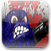
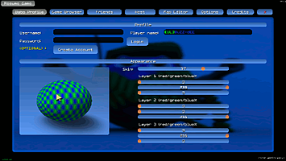
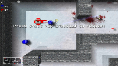
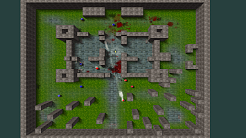
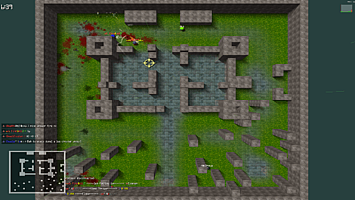

Babo Violent 2
Dieser Artikel wurde für die folgenden Ubuntu-Versionen getestet:
Ubuntu 14.04 Trusty Tahr
Zum Verständnis dieses Artikels sind folgende Seiten hilfreich:
 Babo Violent 2  ist ein einfallsreicher Multiplayer-Shooter der besonderen Art. Man schießt sich als Ball durch eines der zahlreichen Level. Sehr viele verschiedene Waffen und vier verschiedene Spielmodi stehen einem dabei zur Verfügung. Über das In-Game-Menü findet man schnell einen Server, um an einer Partie teilzunehmen. Mit dem eingebauten Map-Editor kann man sich schnell eigene Karten zusammenbasteln.
ist ein einfallsreicher Multiplayer-Shooter der besonderen Art. Man schießt sich als Ball durch eines der zahlreichen Level. Sehr viele verschiedene Waffen und vier verschiedene Spielmodi stehen einem dabei zur Verfügung. Über das In-Game-Menü findet man schnell einen Server, um an einer Partie teilzunehmen. Mit dem eingebauten Map-Editor kann man sich schnell eigene Karten zusammenbasteln.
Voraussetzungen¶
Da es sich bei Babo Violent 2 um ein Windows-Spiel handelt, ist es nötig Wine zu installieren [2]. Weiterhin ist die Aktivierung der 3D-Beschleunigung Pflicht, mehr zur Installation der Grafikkartentreiber im Wiki-Bereich Grafikkarten [1].
Tasten¶
| Tasten | |
| ^ | Öffnet die Konsole |
| Tab ⇆ | Zeigt Informationen zum Spiel an |
| Esc | Waffen wechseln / Team wechseln etc. |
| W A S D | Steuerung |
| F | Waffen aufheben |
| 2.te Waffe (Atombombe, Schild, Messer) | |
 | Schießen |
 | Molotowcocktail werfen |
 | Granate werfen |
Einstellungen¶
Das Spiel kann über die folgenden Möglichkeiten konfiguriert werden:
über die Menüs im Spiel
über die Konsole im Spiel mittels set z.B.: set sv_enableShotgun true. Weitere Einstellungsmöglichkeiten kann man in der Konfigurationsdatei nachsehen.
über die Konfigurationsdatei
 ~/.wine/drive_c/Programme/RndLabs/BaboViolent 2/main/bv2.cfg [4]
~/.wine/drive_c/Programme/RndLabs/BaboViolent 2/main/bv2.cfg [4]
Problemlösungen¶
Auflösung¶
Da es vorkommt, dass Babo Violent 2 die Auflösung GNOME verstellt, sollte man in dem Spiel unter Options dieselbe Auflösung wie unter GNOME wählen. Falls die entsprechende Auflösung dort nicht zur Verfügung steht, kann man es auch direkt in die Datei bv2.cfg bei r_resolution einstellen [4]. Die Datei befindet sich in dem Pfad ~/.wine/drive_c/Programme/RndLabs/BaboViolent 2/main. Möchte man aus Performancegründen in Babo Violent 2 eine geringere Auflösung als unter GNOME verwenden, so kann man sich mittels eines Skripts behelfen. Dieses Skript stellt nach dem Beenden des Spiels die Auflösung wieder her. Die Auflösung in dem Skript muss natürlich an die eigenen Bedürfnisse angepasst werden. In der folgenden Zeile:
xrandr -s 1920x1080
ersetzt man die Zahlenwerte durch die gewünschte Auflösung. [4]
Screenshots¶
|  |
| Babo Profile |
|  |
| Sniper Instagib - Capture The Flag |
|  |
| Team Deathmatch |
|  |
| Deathmatch |
Infobox¶
| Babo Violent 2 | |
| Originaltitel: | Babo Violent 2 |
| Genre: | Top-Down-Shooter |
| Sprache: | |
| Veröffentlichung: | 2006 |
| Publisher: | Head Games |
| Systemvoraussetzungen | |
| - Betriebssystem | Windows |
| - Steuerung | Maus und Tastatur (empfohlen: Maus mit 3 Tasten und Mausrad) |
| - Prozessor | 500 MHz |
| - Arbeitsspeicher | 128 MB RAM |
| - Festplattenspeicher | 25 MB |
| - Grafikkarte | OpenGL 1.2 kompatible GPU |
| - Internetverbindung | Ja (empfohlen: DSL) |
| Läuft mit: | Wine [2] |
- Erstellt mit Inyoka
-
 2004 – 2017 ubuntuusers.de • Einige Rechte vorbehalten
2004 – 2017 ubuntuusers.de • Einige Rechte vorbehalten
Lizenz • Kontakt • Datenschutz • Impressum • Serverstatus -
Serverhousing gespendet von